数据分组操作
学习目标
- 掌握 MultiIndex 的设置和使用
- 能够在 groupby 分组之后进行聚合操作
- 能够在 groupby 分组之后进行 transform 操作
- 能够在 groupby 分组之后进行 filter 操作
- 能够使用 cut 方法将数据划分成不同区间
1. MultiIndex 多级标签
Series 和 DataFrame 的标签索引可以是多级的，类型为 MultiIndex，可以通过多级标签索引进行取值操作。
1）加载 gapminder.tsv 数据
gapminder = pd.read_csv('./data/gapminder.tsv', sep='\t')
gapminder
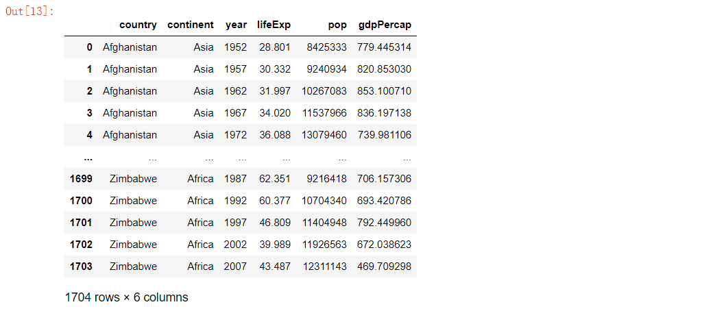
2）将 year 和 country 两列设置为行标签
multiindex_gapminder = gapminder.set_index(['year', 'country'])
multiindex_gapminder.head()
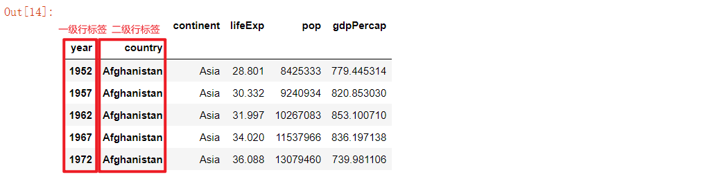
# 查看行标签
multiindex_gapminder.index
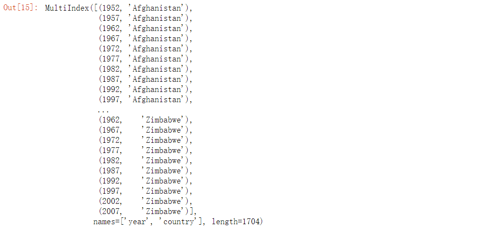
3）根据一级行标签获取数据，示例：获取 1952 年的数据
# 示例：获取 1952 年的数据
multiindex_gapminder.loc[[1952]]
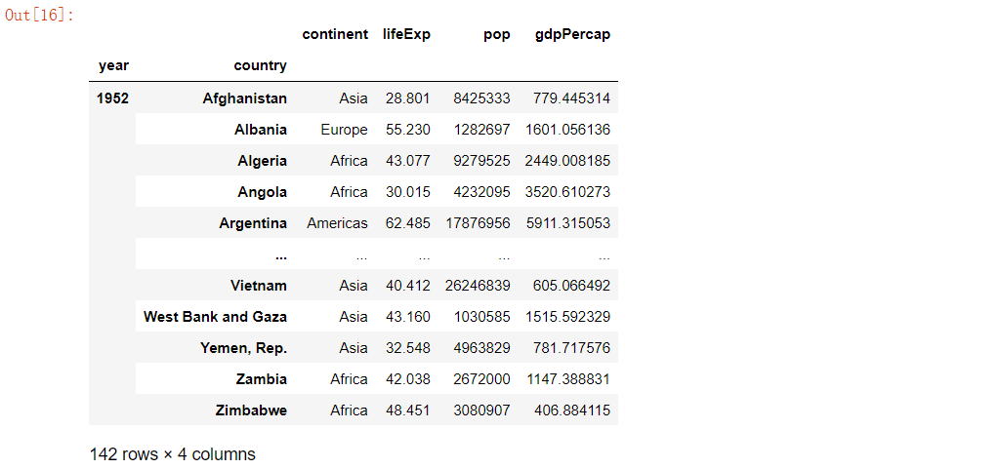
4）根据一级、二级行标签获取数据，示例：获取 1952 年中国的数据
# 示例：获取 1952 年中国的数据
multiindex_gapminder.loc[[(1952, 'China')]]
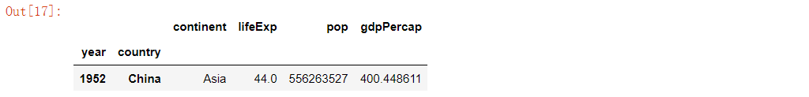
2. 分组聚合操作
2.1 分组聚合简介
在 SQL 中我们经常使用 GROUP BY 将某个字段，按不同的取值进行分组，在 pandas 中也有 groupby 函数；
分组之后，每组都会有至少1条数据，将这些数据进一步处理返回单个值的过程就是聚合。
比如：分组之后计算算术平均值，或者分组之后计算频数，都属于聚合。
基本格式：
| 方式 | 说明 |
|---|---|
方式1：df.groupby(列标签, ...).列标签.聚合函数() |
按指定列分组，并对分组数据 的相应列进行相应的 聚合操作 |
方式2：df.groupby(列标签, ...).agg({'列标签': '聚合', ...})df.groupby(列标签, ...).列表签.agg(聚合...) |
按指定列分组，并对分组数据 的相应列进行相应的 聚合操作 |
方式3：df.groupby(列标签, ...).aggregate({'列标签': '聚合', ...})df.groupby(列标签, ...).列表签.aggregate(聚合...) |
按指定列分组，并对分组数据 的相应列进行相应的聚合操作 |
方式4：df.groupby(列标签, ...)[[列表签1, ...]].聚合函数() |
按指定列分组，并对分组数据 的相应列进行相应的聚合操作 |
注意：
1）方式1 和 方式4 只能使用 pandas 内置的聚合方法，并且只能进行一种聚合
2）方式2 和 方式3 除了能够使用 pandas 内置的聚合方法，还可以使用其他聚合方法，并且可以进行多种聚合
2.2 pandas 内置的聚合方法
可以与groupby一起使用的方法和函数：
| pandas方法 | Numpy函数 | 说明 |
|---|---|---|
| count | np.count_nonzero | 频率统计(不包含NaN值) |
| size | 频率统计(包含NaN值) | |
| mean | np.mean | 求平均值 |
| std | np.std | 标准差 |
| min | np.min | 最小值 |
| quantile() | np.percentile() | 分位数 |
| max | np.max | 求最大值 |
| sum | np.sum | 求和 |
| var | np.var | 方差 |
| describe | 计数、平均值、标准差，最小值、分位数、最大值 | |
| first | 返回第一行 | |
| last | 返回最后一行 | |
| nth | 返回第N行(Python从0开始计数) |
2.3 分组聚合操作演示
1）加载 gapminder.tsv 数据集
gapminder = pd.read_csv('./data/gapminder.tsv', sep='\t')
gapminder.head()
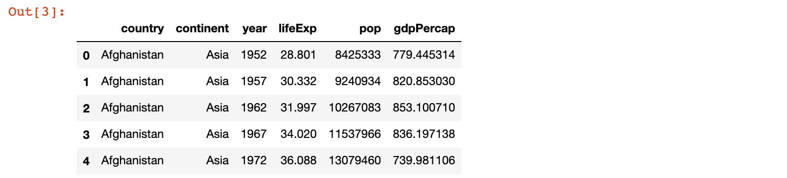
2）示例：计算每年期望年龄的平均值
# 示例：计算每年期望年龄的平均值
# gapminder.groupby('year')['lifeExp'].mean()
gapminder.groupby('year').lifeExp.mean()
或
gapminder.groupby('year').agg({'lifeExp': 'mean'})
或
import numpy as np
gapminder.groupby('year').agg({'lifeExp': np.mean})
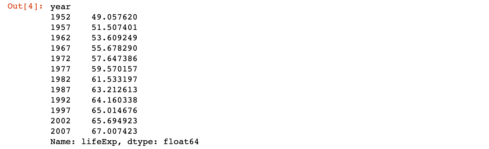
3）示例：统计每年预期寿命的最小值、最大值和平均值
# 示例：统计每年预期寿命的最小值、最大值和平均值
# gapminder.groupby('year')['lifeExp'].agg(['min', 'max', 'mean'])
gapminder.groupby('year').lifeExp.agg(['min', 'max', 'mean'])
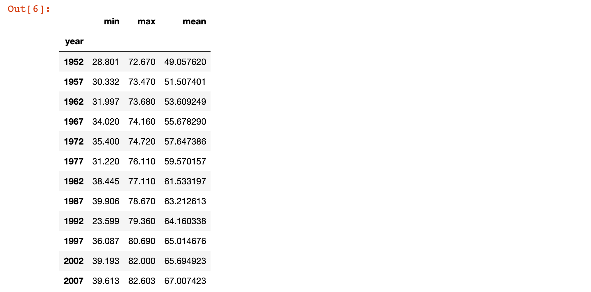
4）示例：统计每年的人均寿命和GDP的最大值
# 示例：统计每年的人均寿命和GDP的最大值
ret = gapminder.groupby('year').agg({'lifeExp': 'mean', 'gdpPercap': 'max'})
ret.rename(columns={'lifeExp': '人均寿命', 'gdpPercap': '最高GDP'})

5）示例：计算每年期望年龄的平均值(自定义聚合函数)
def my_mean(values):
"""计算平均值"""
# 获取数据条目数
n = len(values)
_sum = 0
for value in values:
_sum += value
return _sum/n
# gapminder.groupby('year')['lifeExp'].agg(my_mean)
gapminder.groupby('year').lifeExp.agg(my_mean)
6）示例：统计每年的平均年龄和所有平均年龄的差值(自定义聚合函数)
# 示例：统计每年的平均年龄和所有平均年龄的差值
def diff_lifeExp(values, global_mean):
return values.mean() - global_mean
# 计算所有平均年龄
global_mean = gapminder.lifeExp.mean()
gapminder.groupby('year').lifeExp.agg(diff_lifeExp, global_mean=global_mean)
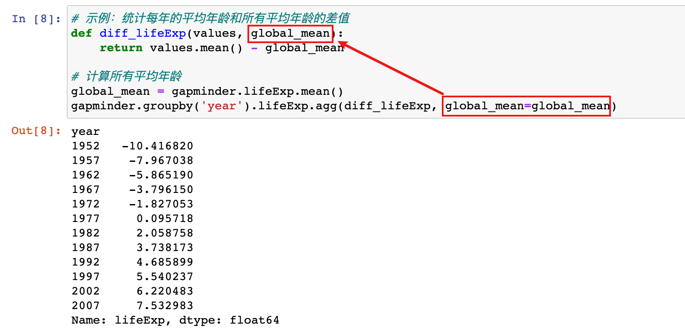
3. transform 转换
- transform 转换，需要把 DataFrame 中的值传递给一个函数， 而后由该函数"转换"数据
- aggregate(聚合) 返回单个聚合值，但 transform 不会减少数据量
3.1 transform 功能演示
需求：按年分组，并计算组内每个人的预期寿命和该组平均年龄的差值
def lifeExp_diff(x):
return x - x.mean()
# gapminder.groupby('year')['lifeExp'].transform(lifeExp_diff)
gapminder.groupby('year').lifeExp.transform(lifeExp_diff)
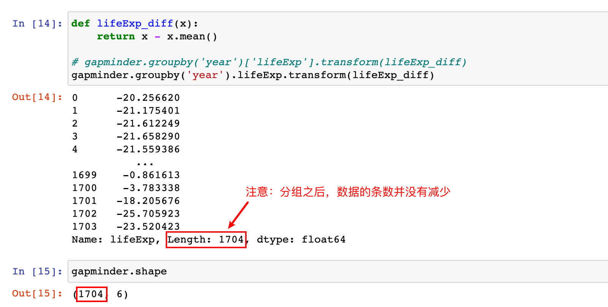
3.2 transform 分组填充缺失值
之前介绍了填充缺失值的各种方法，对于某些数据集，可以使用列的平均值来填充缺失值。某些情况下，可以考虑将列进行分组，分组之后取平均再填充缺失值
1）加载 tips.csv 数据集，并从其中随机取出 10 条数据
tips_10 = pd.read_csv('./data/tips.csv').sample(10, random_state=42)
tips_10
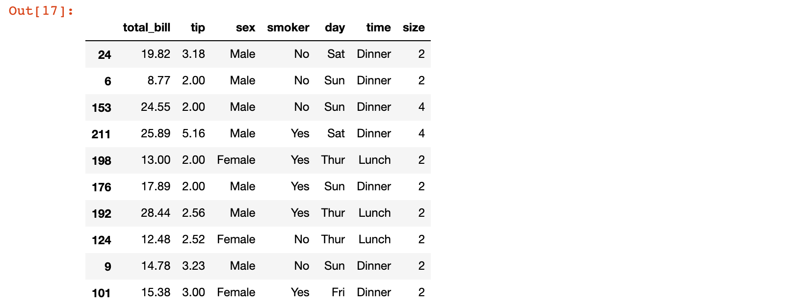
2）构建缺失值
import numpy as np
tips_10.iloc[[1, 3, 5, 7], 0] = np.nan
tips_10
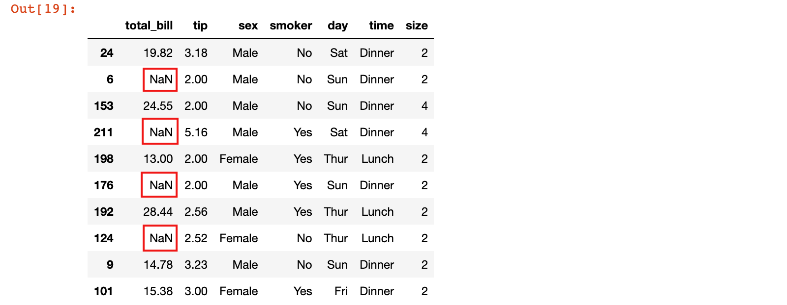
3）分组查看缺失情况
tips_10.groupby('sex').count()
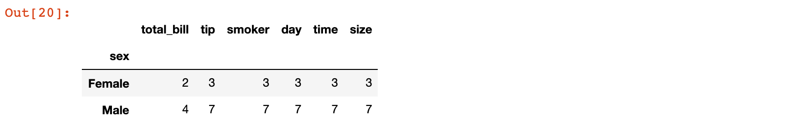
结果说明：
total_bill 列中，Female 性别的有 1 个缺失， Male 性别的有 2 个缺失
4）定义函数，按性别分组填充缺失值
def fill_na_mean(x):
# 计算平均值
avg = x.mean()
# 用平均值填充缺失值
return x.fillna(avg)
total_bill_group_mean = tips_10.groupby('sex').total_bill.transform(fill_na_mean)
total_bill_group_mean
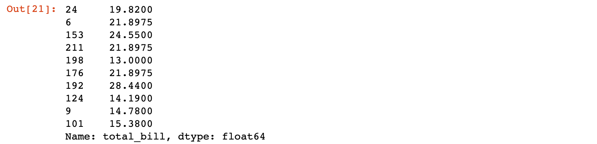
5）将计算的结果赋值新列
tips_10['fill_total_bill'] = total_bill_group_mean
tips_10
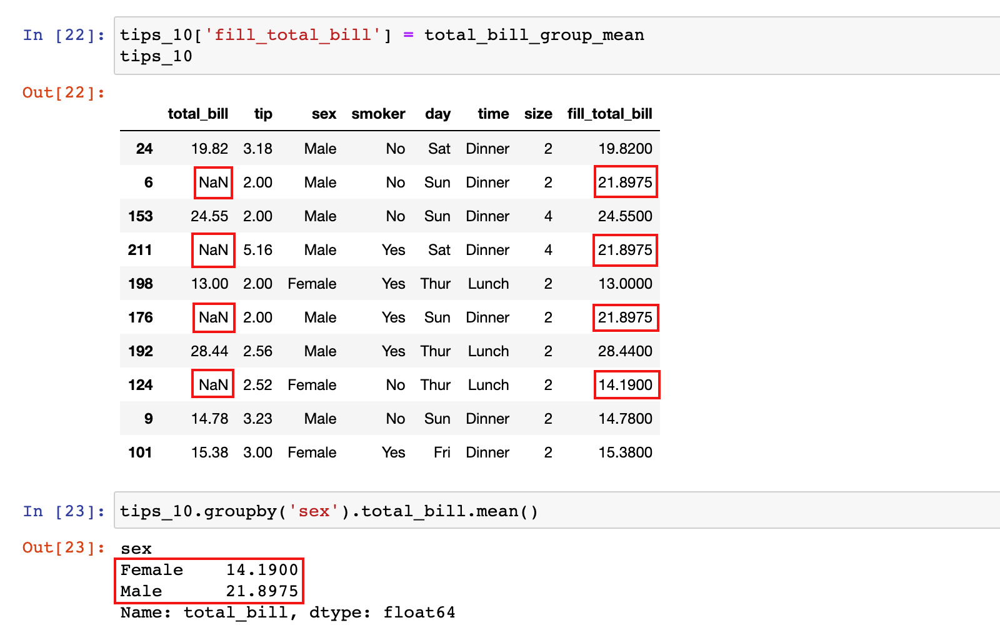
4. 分组过滤
使用 groupby 方法还可以过滤数据，调用 filter 方法，传入一个返回布尔值的函数，返回 False 的数据会被过滤掉
1）使用 tips.csv 用餐数据集，加载数据并不同用餐人数的数量
tips = pd.read_csv('./data/tips.csv')
tips
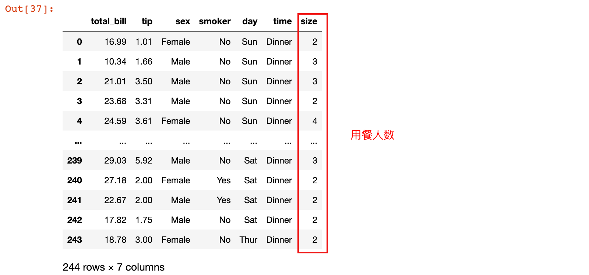
# 统计不同用餐人数的数量
tips['size'].value_counts()
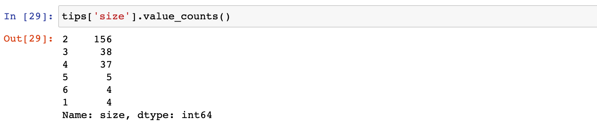
结果显示：人数为1、5和6人的数据比较少，考虑将这部分数据过滤掉
tips_filtered = tips.groupby('size').filter(lambda x: x['size'].count() > 30)
tips_filtered
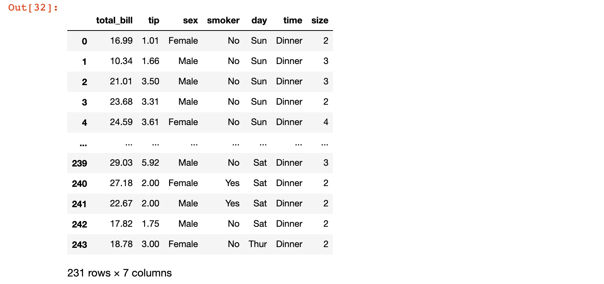
2）查看结果
tips_filtered['size'].value_counts()
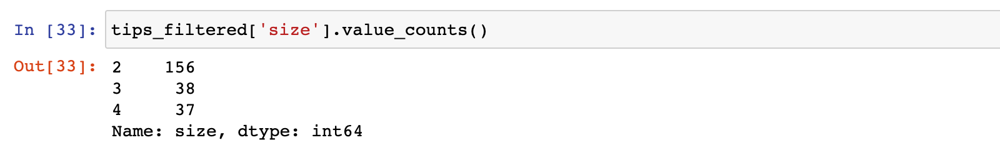
5. DataFrameGroupBy 对象
5.1 分组操作
1）准备数据，加载 tips.csv 数据集，随机取出其中的 10 条数据
tips_10 = pd.read_csv('./data/tips.csv').sample(10, random_state=42)
tips_10
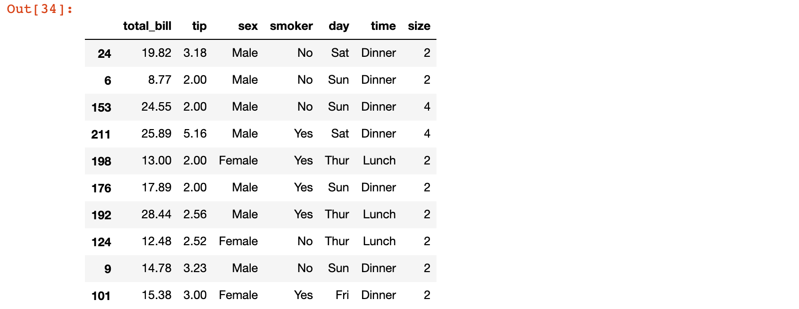
2）调用 groupby 方法，创建分组对象
sex_groups = tips_10.groupby('sex')
sex_groups
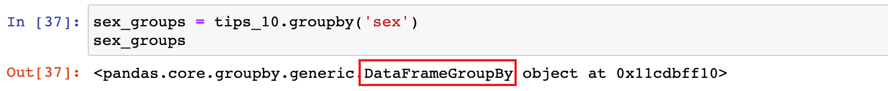
注意：sex_groups 是一个DataFrameGroupBy对象，如果想查看计算过的分组，可以借助groups属性实现
sex_groups.groups
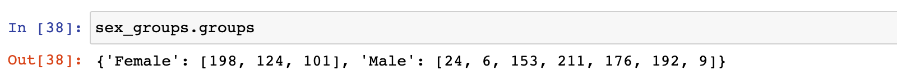
结果说明：上面返回的结果是 DataFrame 的索引，实际上就是原始数据的行标签
sex_groups.size()
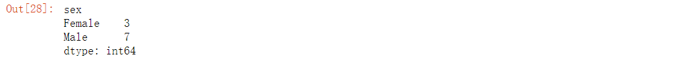
结果说明：上面返回的结果是统计分组之后，每组的数据的数目
3）在 DataFrameGroupBy 对象基础上，直接就可以进行 aggregate、transform 等计算
sex_groups.mean()
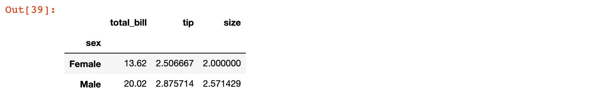
结果说明：上面结果直接计算了按 sex 分组后，所有列的平均值，但只返回了数值列的结果，非数值列不会计算平均值
4）通过 get_group 方法选择分组
sex_groups.get_group('Female')
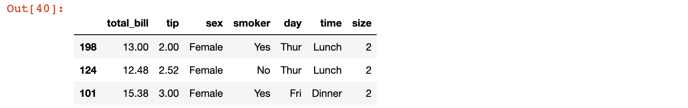
sex_groups.get_group('Male')
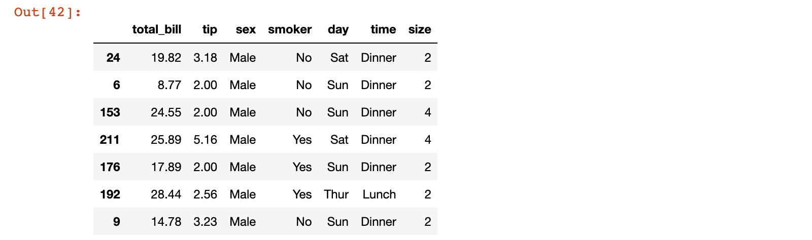
5.2 遍历分组
通过 DataFrameGroupBy 对象，可以遍历所有分组，相比于在 groupby 之后使用aggregate、transform和filter，有时候使用 for 循环解决问题更简单：
for sex_group in sex_groups:
print(type(sex_group))
print(sex_group)
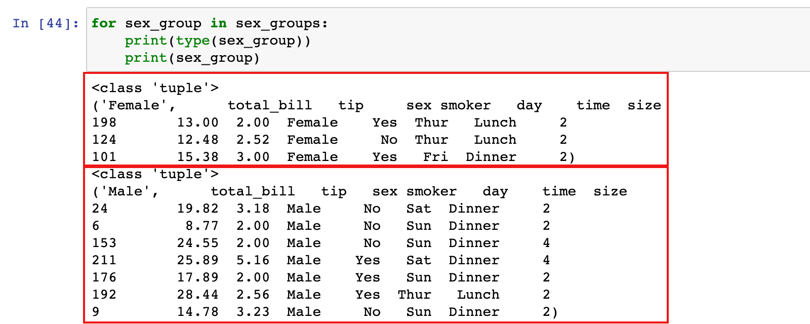
注意：DataFrameGroupBy对象不支持下标取值，会报错
# 这句代码会出错
sex_groups[0]
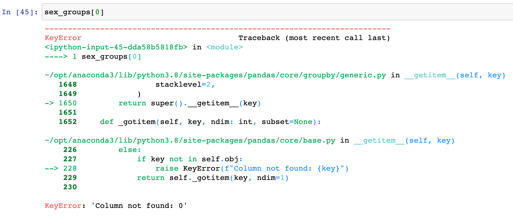
for sex_group in sex_groups:
print(sex_group[0])
print(type(sex_group[0]))
print(sex_group[1])
print(type(sex_group[1]))
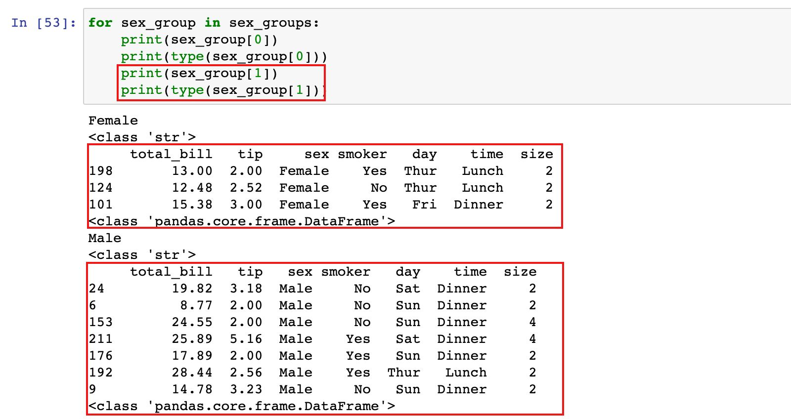
5.3 多个分组
前面使用的 groupby 语句只包含一个变量，可以在 groupby 中添加多个变量
比如上面用到的 tips.csv 数据集，可以使用groupby按性别和用餐时间分别计算小费数据的平均值：
group_avg = tips_10.groupby(['sex', 'time']).mean()
group_avg
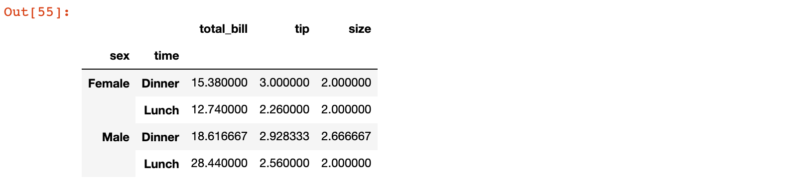
分别查看分组之后结果的列标签和行标签：
# 查看列标签
group_avg.columns
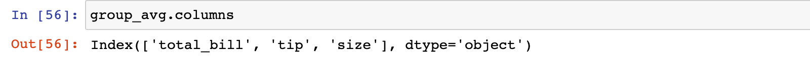
# 查看行标签
group_avg.index
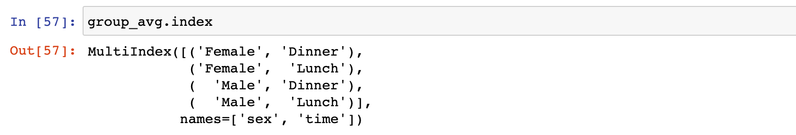
可以看到，多个分组之后返回的是MultiIndex，如果想得到一个普通的DataFrame，可以在结果上调用reset_index 方法
group_avg.reset_index()
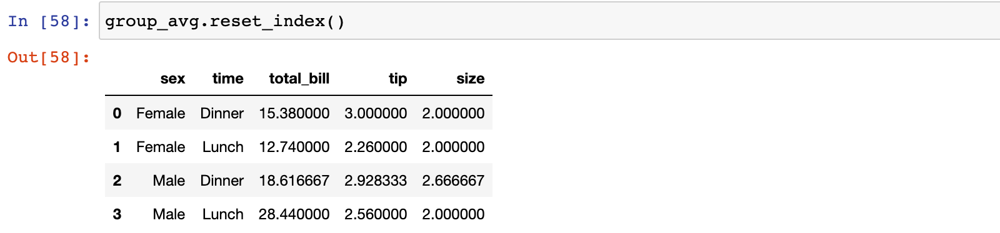
也可以在分组的时候通过as_index=False参数（默认是True），效果与调用reset_index()一样
# as_index=False：分组字段不作为结果中的行标签索引
tips.groupby(['sex', 'time'], as_index=False).mean()
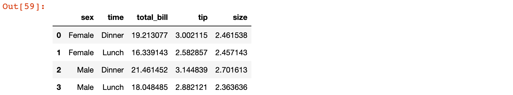
6. 数据划分区间(cut函数)
可以使用 pandas 中的 cut 函数将传递的数据划分成几个区间。
| 方式 | 说明 |
|---|---|
pandas.cut(x, bins, right=True, labels=None) |
将 x 中的每个数据划分到指定的区间： * x：待划分区间的数据，一维数据，可以是Series * bins：list，直接划分时每个区间的边界值 * right：划分区间时，默认左开右闭，设置为False，则表示左闭右开 * labels：可选项，指定每个区间的显示 label |
1）加载 tips.csv 数据
tips = pd.read_csv('./data/tips.csv')
tips
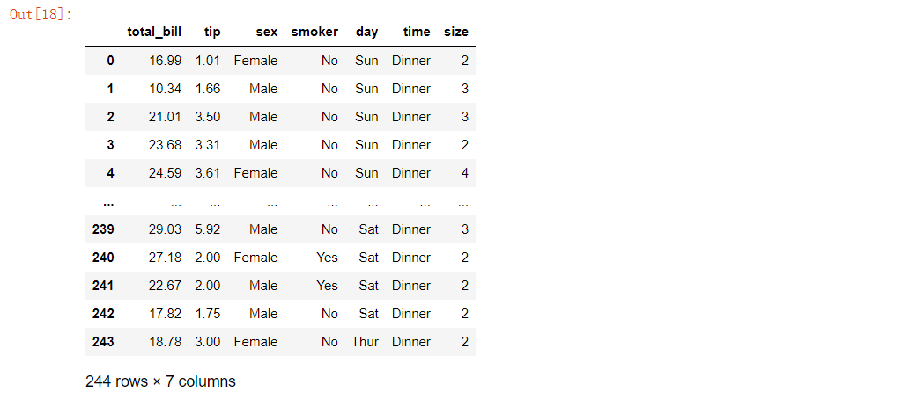
# 查看数据列的信息
tips.info()
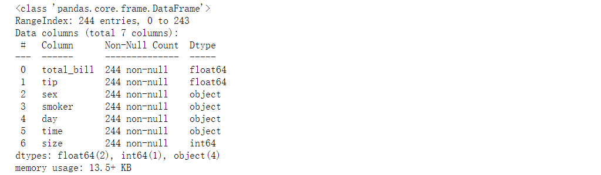
# 查看数据中 total_bill 列的统计值
tips['total_bill'].describe()
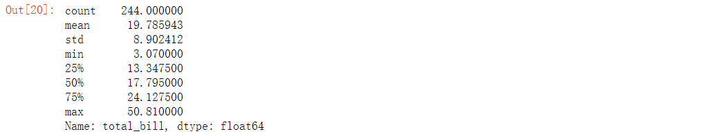
2）将 tips 数据按照 total_bill 列的值划分为 3 个区间：0-10、10-30、30-60
# 指定划分区间的边界值
bins = [0, 10, 30, 60]
pd.cut(tips['total_bill'], bins)
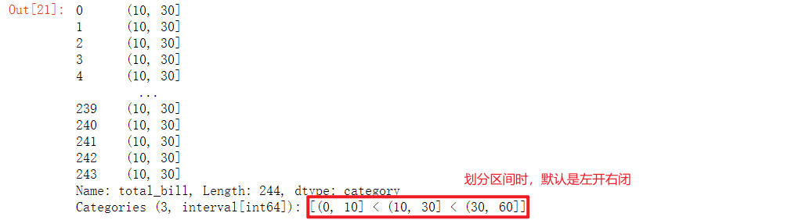
# right=False：设置划分区间时左闭右开
pd.cut(tips['total_bill'], bins, right=False)
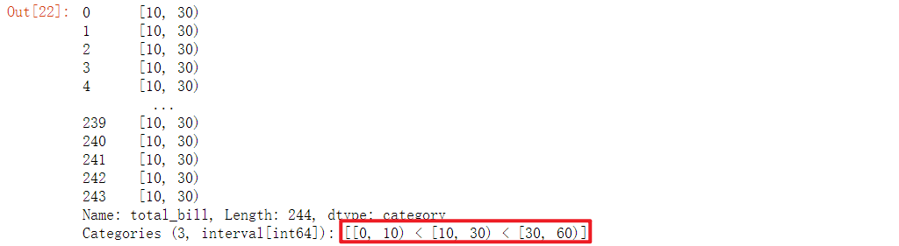
# 设置划分区间的 labels
labels = ['<10', '<30', '<60']
pd.cut(tips['total_bill'], bins, right=False, labels=labels)
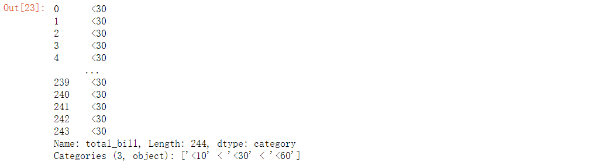
# 在 tips 数据中增加消费金额区间这一列
tips['bill_group'] = pd.cut(tips['total_bill'], bins, right=False, labels=labels)
tips

3）按照消费区间列统计每组消费数据的数目
# 按照消费区间列统计每组消费数据的数目
tips.groupby('bill_group').size()
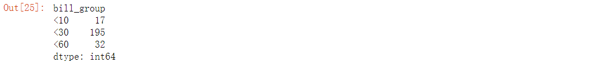
总结
- 分组是数据分析中常见的操作，有助于从不同角度观察数据
- 分组之后可以得到 DataFrameGroupby 对象，该对象可以进行聚合、转换、过滤操作
- 分组之后的数据处理可以使用已有的内置函数，也可以使用自定义函数
- 分组不但可以对单个字段进行分组，也可以对多个字段进行分组，多个字段分组之后可以得到MultiIndex数据，可以通过 reset_index 方法将数据变成普通的 DataFrame
- 利用 pandas 的 cut 方法可以将数据划分成不同的区间